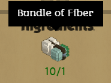
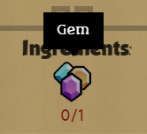

Sometimes when creating recipes for crafters we want to specify that an ingredient can be any item that meets a condition.
Perhaps you've added amethysts, diamonds and rubies and they are all tagged "gem resource" in their "entity_data"'s "material_tags". You want to make a recipe that could use either amethysts, diamonds or rubies as one of its ingredients. [1] In the recipe, we can use a material instead of an alias, in this case we could say "gem resource" and the crafter would be able to use any of those gems to craft the item.
An example from the stonehearth mod would be that when crafting Thread, we want to use any kind of fiber source as an ingredient, no matter if the fiber comes from this or that plant, or from sheep's wool. We use a generic resource for that. 
Adding generic resources
To add our own resource type to the game, we need to mixinto stonehearth/data/resource_constants.json. [1]
"mixintos" : {
"stonehearth:data:resource_constants" : "file(data/resource_constants.json)"
}
The mixinto file should contain:
{
"resources": {
"gem resource": {
"name": "i18n(my_mod:ui.data.constants.gem_resource_name)",
"icon": "/my_mod/entities/resources/gem/gems.png",
"default_resource": "my_mod:resources:gems:diamond"
}
}
}
Substitute "gem resource" with one or more tags from the "material_tags" of the entities you want the crafter to use. If you use more than one tag here (separated with spaces), the entities will need to have both tags in their JSON, otherwise they won't be considered for this resource.
The icon will be shown in the recipe as the ingredient and the name will be used as its tooltip. 
The "default_resource" field is mostly used for building, but it's good to have it even if our resource isn't going to be used for that.
Let's take a look at the existing "clay_brick resource", to take a look at the extra info that we might want to add to our resource:
"clay_brick resource": {
"name": "i18n(stonehearth:ui.data.constants.clay_brick_resource_name)",
"icon": "/stonehearth/entities/construction/clay_bricks/clay_bricks.png",
"stacks": 120,
"default_resource": "stonehearth:construction:clay_bricks",
"auto_queue_crafter_job": "stonehearth:jobs:potter",
"builder_icon": "/stonehearth/entities/resources/clay/builder_clay.png",
"builder_icon_hover": "/stonehearth/entities/resources/clay/builder_clay_hover.png",
"builder_sound_uri": "stonehearth:sounds:building_wall_clay",
"tooltip": "stonehearth:ui.game.build_mode2.tooltips.clay_resource"
}
These are the new fields:
- The "stacks" determine how much does a certain item last. For example, when building hearthlings will use the same clay brick multiple times, and only after 120 building blocks have been placed with it, the brick will disappear. Other items, such as food and gold chests, also have the stacks component in their JSON files and use it in different ways.
The value here is a general count so that the building editor doesn't have to go read the particular stacks component (since each item tagged with this material might have different stacks), and it is used to calculate how many bricks does our building cost.
- The "default_resource" is used for building too. When we destroy a building, the placed items that it contains are dropped in iconic form, and a percentage of the resources used (e.g.: clay bricks, stone, wood) are also dropped.
This is useful when we have a resource such as wood. When we design a building, we tell the editor that the material we want to use is wood, but the building can be built with any type of wood (oak logs, acacia logs, etc). The system only cares about the material, so when we destroy the building, it doesn't know which specific wood was used during the construction (it could have been a mixture of logs from different trees).
To know which resource to drop in this case, the system reads the "default_resource" from here.
The "auto_queue_crafter_job" refers to the crafter that can craft the default resource. This way, when we have "Auto Queue Crafting for Building" enabled in our settings, not only the furniture and decorations will be queued on the appropiate crafter, but the resources too (if they are only obtainable by crafting, which is the case of the clay bricks). The default resource is also useful here, since many recipes could produce this generic resource.
The "builder_icon", "builder_icon_hover", "builder_sound_uri" and "tooltip" refer to images, sounds, and text for this resource for the building editor. The tooltip refers to a localization string, but doesn't need to be inside "i18n()", the UI will take care of it, this is a special case. If we wanted our new generic resource to be available as a material for building, we'd need to add all this info here, as well as mixinto some other files.
References
[1]: From Discourse user Tuhalu's guide on adding mining veins: https://discourse.stonehearth.net/t/tutorial-adding-mining-resources-updated-for-alpha-18/16994